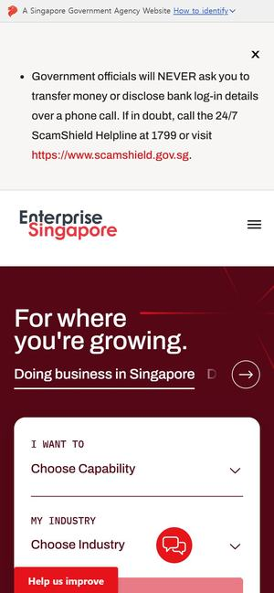

먼저 보세요01Enterprise Singapore
와 포인트첫 화면 한가운데에 ‘I want to(하고 싶은 일)’와 ‘My industry(우리 업종)’ 두 칸을 고르고 Go를 누르는 문장형 선택 상자가 있습니다. 내려가면 ‘Highlights for you’로 지금 주력 지원사업 카드가 이어집니다.
강원테크노파크라면‘원주에 있는 바이오 기업인데 장비 지원이 필요해요’처럼 문장을 채우듯 세 칸을 고르면 지금 모집중인 공고만 남는 첫 화면. 시안의 핵심 장치와 가장 가깝습니다.